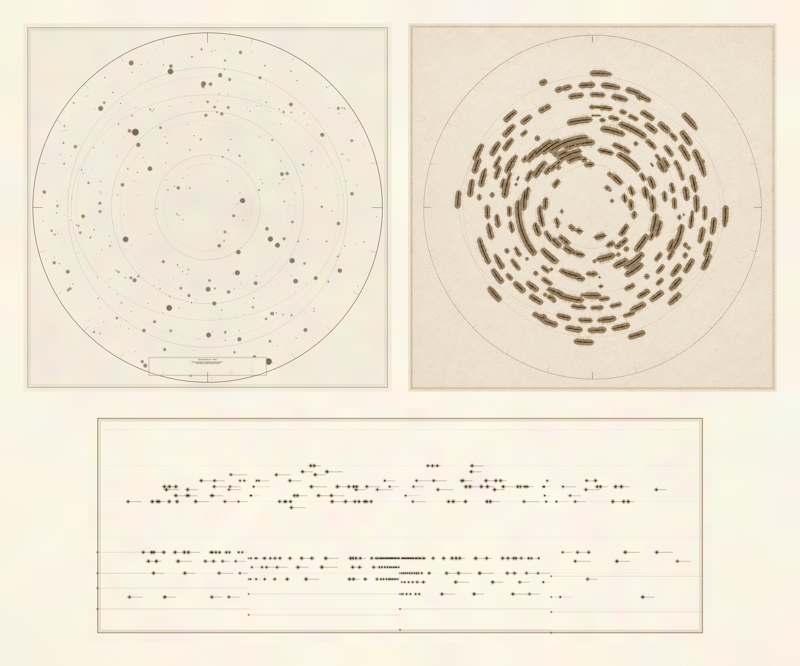
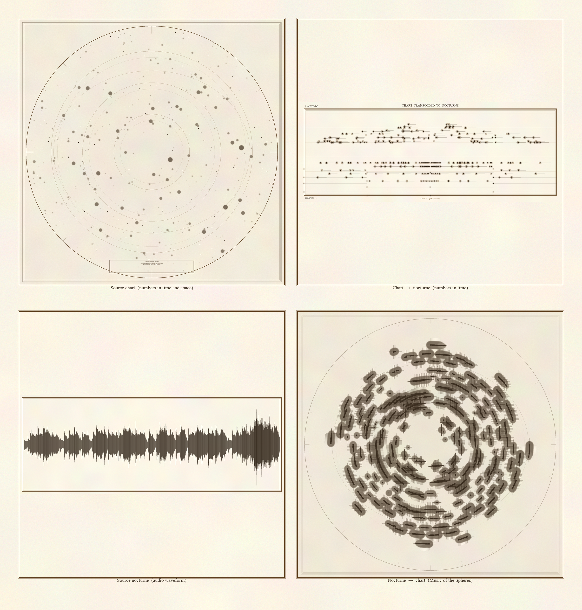
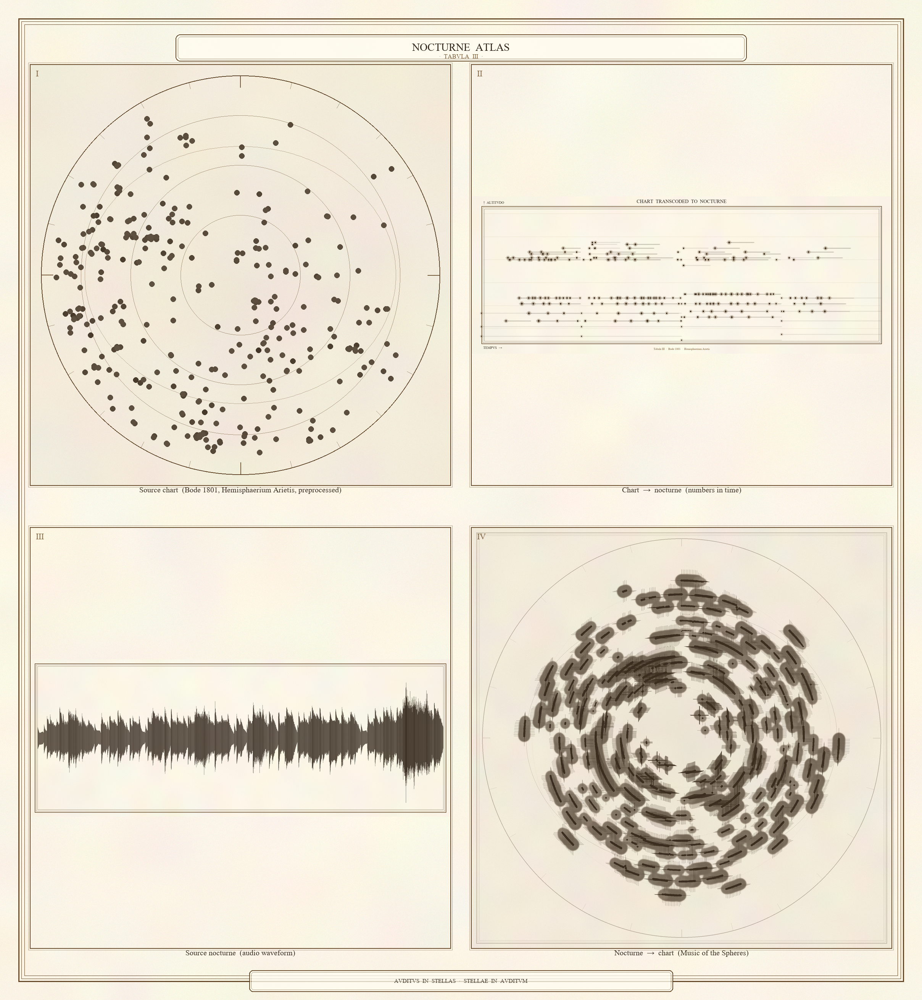
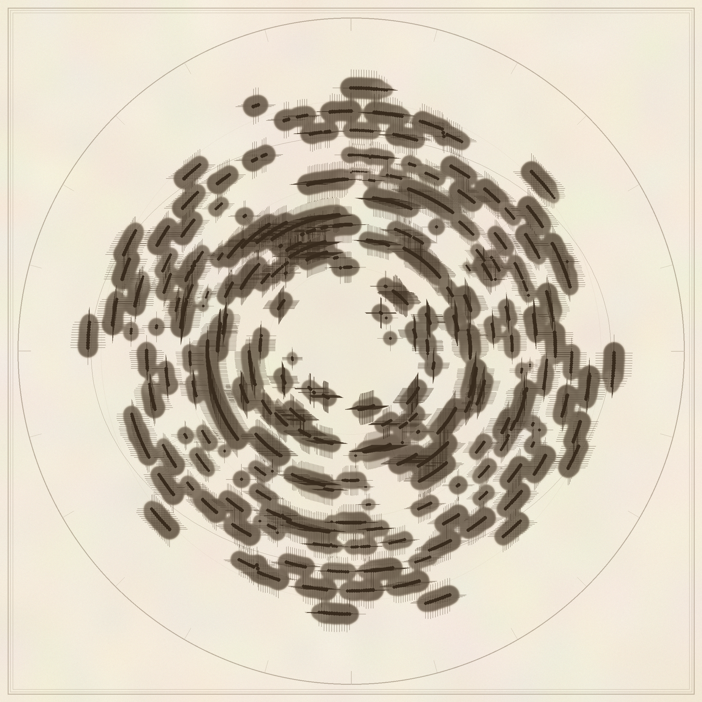

The salon piano of the early nineteenth century and the engraver's burin of the late seventeenth century were instruments of artistic production. They can also be read more strictly: as devices that transcribed a perceived absence into a fixed material trace. The atlas plate gave a metric image of stars whose light had arrived hundreds or thousands of years before; the nocturne gave a measured score for an experience that, in itself, had no measure.
Nocturne Atlas takes this witness-structure as its operative premise and constructs a deterministic bidirectional transcoder between the two instruments. From chart to nocturne, detected stars on a planispheric plate are mapped to MIDI events whose pitch tracks declination, whose velocity tracks apparent magnitude, and whose duration tracks pixel size. From nocturne to chart, spectral peaks of an audio recording are placed on a planisphere by mapping elapsed time to angular position and log-frequency to radial position. The implementation requires no learned model, no GPU, and no stochastic component; outputs are bit-identical given fixed input and configuration.

Plate I, Hemisphaerium Borealis. Midnight palette. Four-panel composite: source chart (engraved planisphere), chart-to-nocturne luminous score, source nocturne (audio waveform), nocturne-to-chart planisphere.

Plate II, Hemisphaerium Australis. Indigo palette, octatonic mode. Note that the audio-derived planisphere (lower right) shows the same constellation pattern as Plate I; the deterministic transcoder yields byte-identical outputs from identical audio inputs.

Plate III, Hemisphaerium Arietis. The source-chart panel is an actual high-resolution scan of Bode's Uranographia (Berlin, 1801), Tabula 1, processed through the engraved-plate preprocessor (difference-of-Gaussians blob detection with non-maximum suppression). The audio-to-chart panel is byte-identical to the corresponding panels of Plates I and II — the deterministic property holds across procedural and historical input regimes.

A planisphere derived from a harmonically periodic input nocturne. The concentric rings are the formal residue of the music's repeating harmonic ground; no historical chart shows such patterns because the night sky does not.
The transcoder runs in two directions, each a deterministic numerical mapping.
The repository ships with procedurally generated stand-in inputs — not historical reproductions. For publication-grade artifacts, replace them with:
| Charts | High-resolution scans of Bayer's Uranometria (1603), Hevelius's Firmamentum Sobiescianum (1690), or Bode's Uranographia (1801). |
|---|---|
| Audio | Public-domain recordings of Chopin's nocturnes, Field's nocturnes, Fauré's late nocturnes, or Debussy's Trois Nocturnes (1899). |
The complete source code is on GitHub: github.com/rosyrosys/nocturne-atlas (currently private; will be made public upon acceptance, in line with double-anonymous review).
The accompanying paper is currently under review. The preprint and supplementary material will be linked here upon acceptance.
git clone https://github.com/rosyrosys/nocturne-atlas
cd nocturne-atlas
python -m venv .venv && source .venv/bin/activate
pip install -r requirements.txt
python synthesize_demo_inputs.py
python run_paper.py